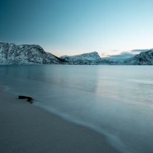
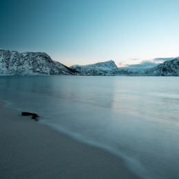
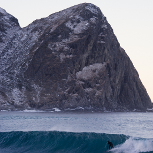
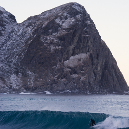

Surf the best.
Plan a 1 day surf trip perfect for family and friends.Lunch and campfire included.
SCROLL
Plan a 1 day surf trip perfect for family and friends.Lunch and campfire included.
SCROLL

Surfers represent a diverse culture based on riding the waves. Some people practice surfing as a recreational activity while others make it the central focus of their lives. Surfing culture is most dominant in Hawaii and California because these two states offer the best surfing conditions. However, waves can be found wherever there is coastline, and a tight-knit yet far-reaching subculture of surfers has emerged throughout America. Some historical markers of the culture included the woodie, the station wagon used to carry surfers' boards, as well as boardshorts, the long swim shorts typically worn while surfing. Surfers also wear wetsuits in colder regions.


 



 

Surfers represent a diverse culture based on riding the waves. Some people practice surfing as a recreational activity while others make it the central focus of their lives. Surfing culture is most dominant in Hawaii and California because these two states offer the best surfing conditions. However, waves can be found wherever there is coastline, and a tight-knit yet far-reaching subculture of surfers has emerged throughout America. Some historical markers of the culture included the woodie, the station wagon used to carry surfers' boards, as well as boardshorts, the long swim shorts typically worn while surfing. Surfers also wear wetsuits in colder regions.
Learn More